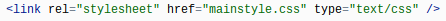
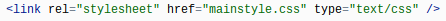

After I made a new HTML file to begin my hardware page, I made a mainstyle.css file to style my page with the background color, text-alignment, a border at the top, and font. I used the code below for the mainstyle.
 I linked my mainstyle.css file to my hardware page so the format would go to the page.
I linked my mainstyle.css file to my hardware page so the format would go to the page.
 I use the biggest header tag for the main title of my website.
I made two comments so I would know where my navbar would start and end. Inside the comments, I included all the links to the different pages of my website.

I added a division tag under the second comment, a dotted border, a second header, then I began the body of the website. After that, I added another
I use the biggest header tag for the main title of my website.
I made two comments so I would know where my navbar would start and end. Inside the comments, I included all the links to the different pages of my website.

I added a division tag under the second comment, a dotted border, a second header, then I began the body of the website. After that, I added another tag, image, and another border. I repeated that for each topic.
Changes I Made
Originally, I had a gray horizontal line after each topic on each page, but I changed it to a bright pink dotted line so it would be more noticble.